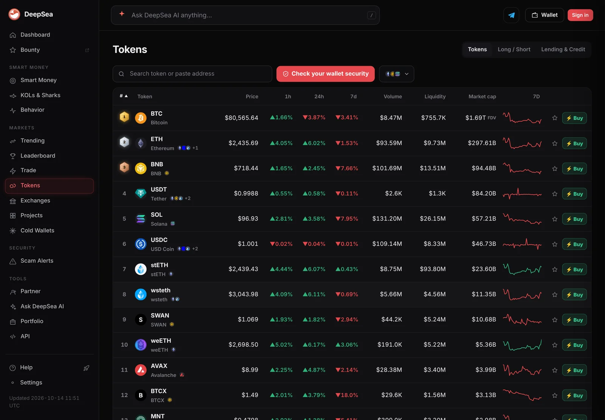

Smart money net bought $1.09 million of Concrete as it slid 17%. Its top sale: AUSD
DeepSea's seven-day flow data to November 2 shows tracked smart money wallets building a position in Concrete (CT) while its price fell, and pulling $3.77 million out of the AUSD stablecoin. Selling signals outnumbered buying ones.
Key points
- DeepSea shows tracked smart money wallets net bought $1.09 million of Concrete (CT) on BNB Chain in the seven days to November 2, 2026, the largest net buy on its token map.
- The biggest net sale was the AUSD stablecoin on Ethereum: $3.87 million sold against $100,000 bought, a net outflow of $3.77 million.
- Across 831 tokens DeepSea tracks, 17 carried a "Smart money selling" signal against 12 with "Smart money accumulating".
 What DeepSea's data shows
What DeepSea's data shows
DeepSea labels some wallets as "smart money": addresses with a record of profitable trades. For each token, it adds up what those wallets bought and sold over the past seven days. The figures below come from DeepSea's token pages and its token flow data, last refreshed at 11:12 p.m. ET on November 1, 2026, so the window runs roughly from October 26.
The top net buy was Concrete (CT) on BNB Chain: $1.18 million bought and $98,500 sold, for a net +$1.09 million. DeepSea flags it "Smart money accumulating." Whales were close to flat on CT (minus $3,100), and KOLs, or crypto influencers, added just $327.
The top net sale was AUSD on Ethereum, where smart money sold $3.87 million and bought $100,000. DeepSea attaches four signals to it: smart money selling, whales selling, dev or team selling, and moves to cold storage.

Data: DeepSea (desea.io), checked November 1, 2026, 11:40 p.m. ET.
What happened
Wallets that DeepSea labels as smart money net bought $1.09 million of Concrete (CT) on BNB Chain in the seven days to November 2, even as the token's price fell 16.7%. Their biggest net sale was $3.77 million of the AUSD stablecoin on Ethereum.
The overall mood was cautious. Across the 831 tokens DeepSea tracks, 17 carried a "Smart money selling" signal and 12 a "Smart money accumulating" signal.
The buyers: one big bet, then small change
The Concrete buy stands out because nothing else came close. The next largest net buys on DeepSea's map were a fraction of its size. Railgun (RAIL) on Ethereum drew $188,600 of smart money buying against $89,700 of selling, a net +$106,700. Whales added another $133,600 there, so DeepSea shows both "Smart money accumulating" and "Whales accumulating" on RAIL.
Chainlink's LINK token on Arbitrum saw a net +$63,500 ($69,900 bought, $6,300 sold). A string of small-cap BNB Chain and Base tokens filled out the rest of the list with net buys under $200,000 each.
The market did not reward the biggest bet in the short run. CoinGecko lists CT at $0.1342 on November 2 with a market value of $25.5 million, down 16.7% over seven days and 78.3% below its all-time high of $0.6195. CoinGecko's daily closes show CT at $0.1685 on October 24 and $0.1410 on November 1. In other words, the tracked wallets were buying into a falling price.
RAIL also slipped. CoinGecko shows it at $2.29, down 5.5% over seven days, with only about $170,600 of trading volume in 24 hours.

The sellers: a stablecoin exit and a staking token
Selling a stablecoin is not a bet against its price, which should stay near $1. It usually means wallets are swapping out of that dollar token into something else, or moving it elsewhere. On AUSD, DeepSea also shows $655,300 leaving developer or team wallets and $700,300 moving into cold storage over the same seven days, with whales net sellers of $1.37 million.
DeepSea's second biggest net sale, $3.59 million of a BNB Chain token called Wrapped BitcoinBR, involved a token DeepSea prices at almost zero with about $4,200 of liquidity, so we set it aside.
Next came Pharaoh Liquid Staking Token (p33) on Avalanche: $570,900 bought and $1.30 million sold, a net minus $733,200, with whales also selling $165,900. On Solana, smart money sold $255,700 of the USDG stablecoin while whales bought $657,800 of it, a rare case of the two groups moving in opposite directions. A Solana token called Super Intelligence (SI) saw a net smart money sale of $131,700.
Biggest moves at a glance
The chart shows the size of each net position change, buys and sales side by side. Labels say which way the money went.
Smart money net flow by token, seven days to November 2, 2026
US$ thousand (absolute size)
Source: DeepSea token flows, checked November 1, 2026, 11:15 p.m. ET

A turn on Aerodrome
Two weeks earlier the picture looked different. DeepSea's weekly report for October 12 to 18 listed Aerodrome (AERO) on Base among the heaviest combined buys by smart money, whales and KOLs, at +$3.31 million. In the latest seven-day window, DeepSea shows smart money net sellers of AERO by $11,000 and whales net sellers by $2.83 million.
CoinGecko has AERO at $0.6293, down 5.7% over seven days. Pepe (PEPE) showed a similar split: a small smart money net sale of $15,200 and a whale net sale of $21.87 million, yet a 15.3% seven-day price gain on CoinGecko.
Who the smart money is
DeepSea's smart money leaderboard for the past seven days is dominated by perpetual futures traders on Hyperliquid, not spot token buyers. All 12 wallets on the first page are Hyperliquid perp traders. The leader, labeled SMc060, shows +$21.80 million of profit on $204.76 million of assets. Second is SM6e36 at +$17.34 million on $172.04 million.
That matters for reading the token flows above. Spot buying of a small-cap token such as CT is a different activity from the leveraged bitcoin and ether trades that drive the leaderboard. DeepSea's token flows cover labeled wallets on the chains it indexes, so they are a sample of the market, not all of it.
LC Insight analysis
This section is our reading of the facts above, not a statement of fact.
- The Concrete buy is the one to watch. It is large relative to CT's $25.5 million market value and came while the price fell. If those wallets are right, it is early accumulation. If not, they are averaging down.
- The AUSD and USDG sales look more like portfolio moves than a view on those stablecoins. The extra signals on AUSD (team outflows and cold storage moves) suggest reshuffling by large holders, not panic.
- With 17 selling signals against 12 buying signals, it was a cautious week. Bitcoin is still below its October 28 close of $81,274 on CoinGecko, which fits a market still digesting the late October drop.
What's next
- Whether smart money keeps adding CT after its 17% weekly fall
- AUSD supply and further team or cold-wallet moves
- DeepSea's next weekly report, which has not covered October 19 onward yet
- Whether whales return to AERO after selling $2.83 million
Disclaimer. This article is based on public information and the sources listed below as of the update time shown. It is for information only and is not investment, legal or tax advice. Figures may change as companies and authorities publish new data.
Sources
- DeepSea, token flows and token pages (checked November 1, 2026, 11:15 p.m. ET)
- DeepSea, Concrete (CT) token page
- DeepSea, Smart money leaderboard (7D)
- DeepSea, Weekly Smart Money and Global Money Flows Report, October 12 to 18, 2026
- CoinGecko, Concrete (CT) price and historical data
- CoinGecko, Railgun (RAIL)
- CoinGecko, Aerodrome Finance (AERO)